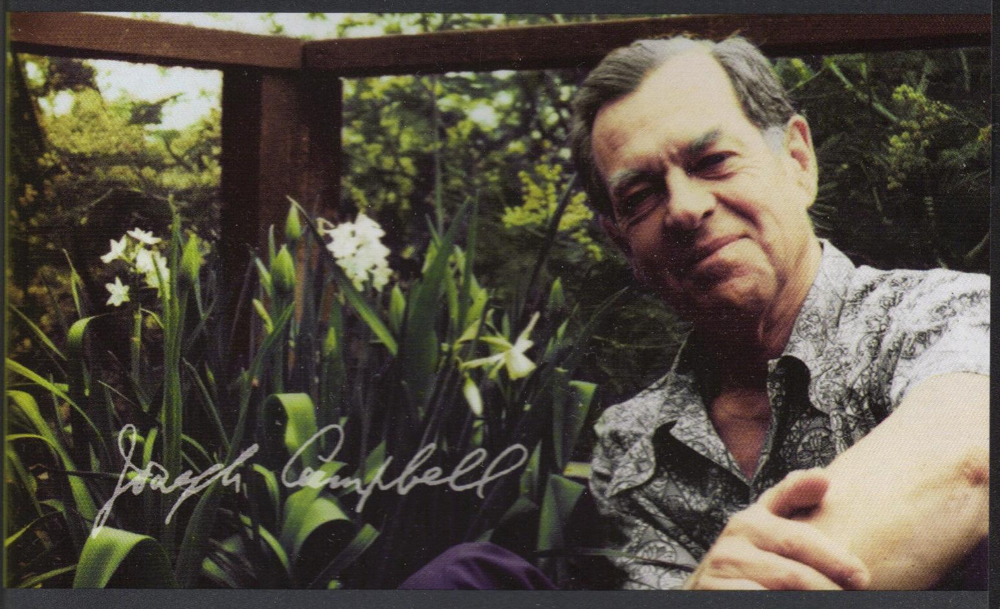

Joseph John Campbell
was an American mythologist, writer and lecturer, best known for his work in comparative mythology and comparative religion.
in which he discusses his theory of the journey of the archetypal hero found in world mythologies.

Born: March 26, 1904 in White Plains, New York, United States
In 1921 Campbell graduated from the Canterbury School in New Milford, Connecticut.
While at Dartmouth College he studied biology and mathematics, but decided that he preferred the humanities.
He transferred to Columbia University, where he received a BA in English literature in 1925 and an MA in Medieval literature in 1927.
An accomplished athlete, he received awards in track and field events, and, for a time, was among the fastest half-mile runners in the world.
In 1924 Campbell traveled to Europe with his family.
On the ship during his return trip he encountered the messiah elect of the Theosophical Society, Jiddu Krishnamurti;
they discussed Indian philosophy, sparking in Campbell an interest in Hindu and Indian thought.
In 1927 Campbell received a fellowship from Columbia University to study in Europe.
He studied Old French, Provençal and Sanskrit at the University of Paris in France and the University of Munich in Germany.
He learned to read and speak French and German.
Campbell traveled to California for a year (1931–32),
continuing his independent studies and becoming close friends with the budding writer John Steinbeck and his wife Carol.
In 1934 Campbell accepted a position as professor at Sarah Lawrence College.
In 1938 he married one of his former students, dancer-choreographer Jean Erdman.
For most of their 49 years of marriage they shared a two-room apartment in Greenwich Village in New York City.
In the 1980s they also purchased an apartment in Honolulu and divided their time between the two cities.
They did not have any children.
In 1972 Campbell retired from Sarah Lawrence College, after having taught there for 38 years.
He died at his home in Honolulu, Hawaii, on 30 October 1987.
One of Campbell's most identifiable, most quoted and arguably most misunderstood sayings was his admonition to follow your bliss.
He saw this not merely as a mantra, but as a helpful guide to the individual along the hero journey that each of us walks through life:
If you follow your bliss, you put yourself on a kind of track that has been there all the while, waiting for you,
and the life that you ought to be living is the one you are living.
Wherever you are, if you are following your bliss, you are enjoying that refreshment,
that life within you, all the time.